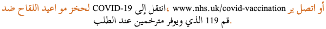
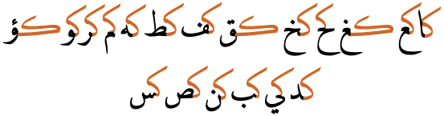
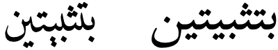
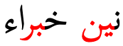
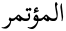
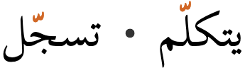
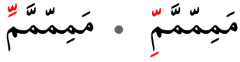

This page brings together basic information about the Arabic script and its use for the Wolof language. It aims to provide a brief, descriptive summary of the modern, printed orthography and typographic features, and to advise how to write Wolof using Unicode.
The Wolof language is spoken by around 40% of Senegalese, and others in Mauritania and The Gambia. There are around 5.5 million native speakers in Senegal, and the total number of speakers is a little over 12 million.
Wolof is normally written in the Latin script, but also the Garay script is used by a small number of people, and historically but still occasionally it is written using the Arabic ajami script.
وࣷلࣷفْwɔlɔfWolof language
The use of the Arabic script has a much longer history than that of the Latin orthography, which was a colonial import. A number of letters were obsoleted by more recent standards for the orthography, maintained by the "Centre de linguistique appliquée de Dakar" (CLAD).
The Latin script is an alphabet. This means that it is largely phonetic in nature, where each letter represents a basic sound. See the table to the right for a brief overview of features for the modern Wolof orthography using the Latin script.
Wolof text runs left-to-right in horizontal lines.
Words are separated by spaces.
The orthography is bicameral.
Wolof has 20 basic consonant letters. All this duplicated in upper- and lowercase. ❯ consonants
Four pre-nasalised stops are written using digraphs. ❯ prenasalisation
Consonant gemination is common and distinctive, and is written using doubled letters. ❯ gemination
This orthography is an alphabet in which vowels are written using 9 vowel letters, each with upper and lowercase forms. Combining marks (4) only occur in decomposed text. Long vowels are indicated by doubling letters, except that a long aː before geminates or consonant clusters is written using à. ❯ vowels
Numbers use ASCII digits.
The visual forms of letters don't usually interact.
Line-breaking and justification are primarily based on inter-word spaces.
Joining forms
Because the Arabic script is 'cursive' (ie. joined-up) writing, letters tend to have different shapes depending on whether they join with adjacent letters or not (see cursive). In addition, vowels can be represented using different characters, depending on where in a word they appear.
In scripts such as Arabic, several characters have no left-joining form. In what follows we'll use the characters ي and د to illustrate shapes. The former can join on both sides, but the latter can only join on the right.
Left-joining glyphs are commonly called initial; dual-joining are called medial; and right-joining are called final. Glyphs that don't join on either side are called isolated. However, these glyph shapes can be found in various places within a single word.
Word-initial characters usually have initial glyph shapes (eg. 064A ). However, characters that only join to the right will use an isolated glyph shape (eg. 062F ).
Furthermore, words beginning with a vowel are always preceded by a vowel carrier, which is normally ا
(eg. 0627 06CC or 0627 064E ).
Word-medial characters will typically join on both sides
(eg. 064A ) but those that only join to the right will use a final glyph (eg. 062F ).
However, if either of those is preceded by another character that only joins to the right, the glyph shapes rendered will be initial (eg. 064A )
and isolated (eg. 062F ), respectively.
Word-final characters will typically use a final glyph shape (eg. 064A and 062F ).
However, if the previous character joins only to the right, they will use isolated glyph shapes (eg.064A and 062F ).
In all this contextual glyph shaping the basic shapes used for a character can vary significantly in a script like Arabic. This also includes some characters that only have ijam dots in certain contexts.
Character index
Letters
Show
Consonants
آ␣ا␣ب␣ت␣ج␣خ␣د␣ر␣س␣ع␣ف␣ق␣ل␣م␣ن␣ه␣و␣ي␣ک␣گ␣ݒ␣ݖ␣ݝ␣ݧ
Obsolete
پ␣چ␣ڎ␣ڭ␣ݑ␣ݣ␣ݤ
Combining marks
Showَ␣ُ␣ِ␣ّ␣ْ␣ۛ␣ࣴ␣ࣵ␣ࣷ␣ࣸ␣ࣹ␣ࣺ
Obsolete
ٜ␣ٝ
Punctuation
Show،␣؛␣؟␣‘␣’␣“␣”␣…
ASCII
!␣(␣)␣-␣.␣:
Other
Show␣␣␣␣␣␣␣␣␣␣␣␣͏
To be investigated
%␣Z␣[␣]␣z␣§␣«␣»␣‑␣–␣—␣†␣‡␣;␣‰␣′␣″␣‹␣›
Items to show in lists
Phonology
The following represents the general repertoire of the Wolof languages and dialects.
Click on the sounds to reveal locations in this document where they are mentioned.
Phones in a lighter colour are non-native or allophones. Source Wikipedia.
Vowel sounds
Long vowel sounds are distinctive.
Consonant sounds
labial
alveolar
palatal
velar
glottal
stop
pb
td
cɟ
kɡ
ʔ
pre-nasalised
ᵐb
ⁿd
ᶮɟ
ᵑɡ
fricative
f
s
x
nasal
m
n
ɲ
ŋ
approximant
w
l
j
trill/flap
r
The glottal stop occurs before standalone vowels, but is not written.
اَکَرَ
Vowel harmony
Vowels in suffixes tend to be altered due to vowel harmony, based on the advanced tongue retraction (ATR) of the word-initial vowel. There are some exceptions.
+ATR vowels are: i u é ó ë.
-ATR vowels are: e o a.
Authors differ in whether they reflect the vowel harmony in writing.
Tone
There is no tone in Wolof.
Structure
Gemination is common and occurs with all consonants except q, ʔ, f, s, and x.
Gemination and consonant clusters do not occur in word-initial position, but can occur medially and in final position, where they may be followed by a faint epenthetic schwa.
p, d, c, and k only occur formally in word-initial position, unless geminated (which is common), or following a nasal. However, word final b, j, and g are typically devoiced and become allophones of those consonants.
Vowels
Vowel summary
The following table summarises the main vowel to character assignments.
Each table cell shows word-initial, word-medial, and word-final forms from right to left. The glyphs shown are illustrative; alternative shapes may occur (see joining_forms). Click/tap on items to see a list of the components for that cell.
iاِ◌ِ◌ِ iːاِي◌ِي◌ِي
uاُ◌ُ◌ُ uːاُو◌ُو◌ُو
eاࣺ◌ࣺ◌ࣺ eːاࣺي◌ࣺي◌ࣺي
oاࣸ◌ࣸ◌ࣸ oːاࣸو◌ࣸو◌ࣸو
əاࣴ◌ࣴ◌ࣴ əːاࣴعࣴ◌ࣴعࣴ◌ࣴعࣴ
ɛاࣹ◌ࣹ◌ࣹ ɛːاࣹي◌ࣹي◌ࣹي
ɔاࣷ◌ࣷ◌ࣷ ɔːاࣷو◌ࣷو◌ࣷو
aاَ◌َ◌َ aːاَ◌َا◌َا
Basic Wolofal vowels.
In word-initial position vowels are attached to 0627, which acts as a vowel carrier (see standalone). Otherwise, unlike orthographies for languages such as Arabic and Urdu, the spelling is very regular and characters used to represent a given vowel are normally the same, regardless of the position within a word. All vowel diacritics are always written.
This is the full set of characters needed to represent the Wolof vowels.
ا␣ع␣و␣ي␣َ␣ُ␣ِ␣ࣴ␣ࣷ␣ࣸ␣ࣹ␣ࣺ
Combining marks used for vowels
Wolof uses the following combining characters for vowels.
َ␣ُ␣ِ␣ࣴ␣ࣷ␣ࣸ␣ࣹ␣ࣺ
Vowel letters
Consonant letters used for vowels
Wolof uses the following consonant characters to write vowels in combination with diacritics.
آ␣ا␣ع␣و␣ي
All word-initial vowels use 0627 as a vowel carrier, except for aː, which uses the single letter 0622. The remaining letters, and aleph, are used after a vowel diacritic to indicate a long vowel.
In a standard Arabic orthography some of these characters would be regarded as matres lectionis, but since Wolof shows all vowel diacritics they don't have the same role here. Instead, they form part of a composite that distinguishes one vowel from another (see compositeV).
Standalone vowels
Wolof tends not to have true standalone vowels. Orthographically, word-initial vowels are preceded by 0627, which represents the glottal stop ʔ, although that is not always written in IPA transcriptions.
اَکَرَ
In word-medial locations a sequence of vowels (usually in foreign words) is separated by 0639.
اِسْرَعࣹلْ
Vowel length
ا␣و␣ي␣آ␣ع
In most cases, vowel length is indicated by adding one of the first 3 letters above after the vowel diacritic. It is clear when these letters are being used to lengthen vowels (rather than as consonants) because they don't carry a vowel diacritic themselves. For details, see the table at basicV.
لࣺينِ
بُورْ
كࣵادُّ
One exception is the word-initial aː, which is represented using 0622 alone.
آکِمُ
The long vowel əː is also unusual in that it is represented by the combination 08F4 0639 08F4.
سُفࣴلࣴعࣴر
Nasalisation
Vowel nasalisation is not a distinctive feature of Wolof. (However, see also prenasalisalization.)
Tones
Wolof does not have tones.
Obsolete vowels
In the past the following diacritics were used for Wolofal, but they are now obsolete.
ٜ␣ٝ
065C was used for both ɛ and e. 065D was used for ɔ.
Also, 064E was used where 08F5 is used nowadays, and 064F was used for ɔ instead of 08F7.
Vowel absence
ْ
Wolof uses 0652 to indicate that there is no vowel after a consonant. Vowel absence is usually marked (unlike Standard Arabic), including syllable-final consonants.
اِتَمْ
وࣷرْسَگْ
The exceptions are letters used to lengthen vowels and nasal letters indicating prenasalisation. The regular use of the sukun provides a simple way to unambiguously tell when these letters are being used as consonants or for the functions just described.
سࣵنݖّ
سࣴيهْ
Another exception is that consonants which carry 0651 do not also carry the sukun.
ݒِݖّ
Vowel sounds to characters
This section maps Wolof vowel sounds to common graphemes in the Arabic orthography.
The columns run right to left and indicate typical word-initial, word-medial, and word-final usage. The joining forms shown are illustrative; alternative shapes may occur (see joining_forms). They are also fully-vowelled, although the examples show normal unvowelled usage as well as vowelled.
Click on a grapheme to find other mentions on this page (links appear at the bottom of the page). Click on the character name to see examples and for detailed descriptions of the character(s) shown.
Sounds listed as 'infrequent' are allophones, or sounds used for foreign words, etc.
i
0650
لࣺينِ
0650
ݒِݖّ
0627 0650
اِتَمْ
iː
0650 064A
0650 064A
نجِيتْ
0627 0650 064A
u
064F
دَانُ
064F
دُگُبْ
0627 064F
اُݒُّکَاي
uː
064F 0648
064F 0648
بُورْ
0627 064F 0648
e
08FA
لࣸرِيࣺ
08FA
دࣺنکّ
0627 08FA
eː
08FA 064A
08FA 064A
لࣺينِ
0627 08FA 064A
o
08F8
08F8
نࣸبْ
0627 08F8
oː
08F8 0648
08F8 0648
وࣸورْ
0627 08F8 0648
ə
08F4
08F4
گࣴمْ
0627 08F4
əː
08F4 0639 08F4
08F4 0639 08F4
سُفࣴلࣴعࣴر
0627 08F4 0639 08F4
ɛ
08F9
اُودࣹ
08F9
سࣹنࣹگَالْ
0627 08F9
ɛː
08F9 064A
08F9 064A
لࣹينْ
0627 08F9 064A
ɔ
08F7
آجࣷ
08F7
وࣷلࣷفْ
0627 08F7
اࣷوتࣷ
ɔː
08F7 0648
08F7 0648
وࣷورْ
0627 08F7 0648
a
064E
064E
رَخَسْ
0627 064E
اَکَرَ
Used before geminated or prenasalised consonants.
08F5
كࣵادُّ
0627 08F5
aː
064E 0627
064E 0627
جَايْ
0622
آکِمُ
Consonants
Basic consonant letters
ݒ␣ب␣ت␣د␣ݖ␣ج␣ک␣گ␣قف␣س␣خ␣هم␣ن␣ݧ␣ݝو␣ر␣ل␣ي
Pre-nasalised stops
مݒ␣مب␣ند␣نݖ␣نج␣نک␣نگ␣نق
Pre-nasalised sounds are written using digraphs, and occur frequently.
مبَارْ
نگَ
ندَوْ
The sounds ᵐp, ᶮc, and ᵑq don't occur word-initially.
سࣵنݖّ
سࣵمݒّ
Obsolete consonants
In the past the following were used for Wolofal, but they are now obsolete.
جۛ␣پ␣چ␣ڭ␣ݑ␣ݤ
Onsets
Other than prenasalised stops, consonant clusters in syllable onsets are quite rare in Wolof. There are no special mechanisms other than the use of the sukun and the prenasalisation.
Finals
Syllable-final consonants are marked with a sukun, or with a shadda if they are elongated.
Consonant clusters
tbd
Consonant length
Consonant gemination is common and is phonemically distinctive in Wolof. Gemination is written using 0651. It is particularly common in word-final position.
بࣴتْ
بࣴتّ
Note that only one of 0651 and 0652 can appear above a letter.
Consonant sounds to characters
This section maps Wolof consonant sounds to common graphemes in the Arabic orthography.
Click on a grapheme to find other mentions on this page (links appear at the bottom of the page). Click on the character name to see examples and for detailed descriptions of the character(s) shown.
Sounds listed as 'infrequent' are allophones, or sounds used for foreign words, etc.
Stops
p
0752
ݒِݖّ
075207520752 ⏴
b
0628
بَاتْ
062806280628 ⏴
t
062A
تَارْ
062A062A062A ⏴
d
062F
دَانُ
062F062F ⏴
c
0756
ݖَابِ
075607560756 ⏴
ɟ
062C
جَايْ
062C062C062C ⏴
k
06A9
کࣹݒُّ
06A906A906A9 ⏴
ɡ
06AF
گَالْ
06AF06AF06AF ⏴
q
0642
نَقَرْ
064206420642 ⏴
Prenasalised stops
ᵐp
0645 0752 Doesn't occur in word-initial position.
ݒِݖّ
0645 07520645 07520645 0752 ⏴
ᵐb
0645 0628
بَاتْ
0645 06280645 06280645 0628 ⏴
ⁿd
0646 062F
دَانُ
0646 062F0646 062F ⏴
ᶮc
0646 0756 Doesn't occur in word-initial position.
ݖَابِ
0646 07560646 07560646 0756 ⏴
ᶮɟ
0646 062C
جَايْ
0646 062C0646 062C0646 062C ⏴
ᵑk
0646 06A9
کࣹݒُّ
0646 06A90646 06A90646 06A9 ⏴
ᵑɡ
0646 06AF
گَالْ
0646 06AF0646 06AF0646 06AF ⏴
ᵑq
0646 0642 Doesn't occur in word-initial position.
نَقَرْ
0646 06420646 06420646 0642 ⏴
Fricatives
f
0641
فَارْ
064106410641 ⏴
s
0633
سࣹنࣹگَالْ
063306330633 ⏴
x
062E
خَمْ
062E062E062E ⏴
h
0647 Uncommon.
هَارْ
064706470647 ⏴
Nasals
m
0645
مَامْ
064506450645 ⏴
n
0646
نَانْ
064606460646 ⏴
ɲ
0767
ݧَانْ
076707670767 ⏴
ŋ
075D
ݝَامَمْ
075D075D075D ⏴
Other
w
0648
وَاوْ
06480648 ⏴
r
0631
رَخَسْ
06310631 ⏴
l
0644
لࣺينِ
064406440644 ⏴
j
064A
يَايْ
064A064A064A ⏴
Other features
Ligatures
The combination ل + ا [U+0644 ARABIC LETTER LAM + U+0627 ARABIC LETTER ALEF] is always written as a ligature. The underlying code points are, however, preserved. The shape varies slightly, depending on whether the ligature joins to the right or not. Compare:
لَاکَ
لِسْلَانْ
Observation: When diacritics are used with this ligature, they sometimes appear to be over the ALEF, rather than over the LAM, eg. قليلاً This would require a typing order that is different from the spoken sequence.
Formatting characters
Arabic script text makes use of a relatively large set of invisible formatting characters, especially in plain text, many of which are used to manage text direction. Descriptions of these characters can be found in the following sections:
The code points in the Unicode blocks Arabic Presentation Forms-A and Arabic Presentation Forms-B provide positional forms of Arabic letters and ligatures. They should not be used for ordinary text. Those code points are provided for compatibility with legacy code pages, and have (compatibility) character decomposition mappings. Normally, Arabic text should be written with code points from the main Arabic block and its extensions; positional forms are dealt with by the font and rendering algorithms.
Arabic script text is written horizontally and right-to-left in the main but, as in most right-to-left scripts, numbers and embedded text in other scripts are written left-to-right (producing 'bidirectional' text).
Arabic words are read right-to-left, starting from the right of this line, but numbers and Latin text (highlighted) are read left-to-right.
The Unicode Bidirectional Algorithm automatically takes care of the ordering for all the text in fig_bidi, as long as the 'base direction' is set to RTL. In HTML this can be set using the dir attribute, or in plain text using formatting controls.
If the base direction is not set appropriately, the directional runs will be ordered incorrectly as shown in fig_bidi_no_base_direction, making it very difficult to get the meaning.

The exact same sequence of characters with the base direction set to RTL (top), and with no base direction set on this LTR page (bottom). Certain items are highlighted to help track their position.
For authoring HTML pages, one of the most important things to remember is to use <html dir="rtl" … > at the top of the page. Also, use markup to manage direction, and do not use CSS styling.
Managing text direction
Unicode provides a set of 10 formatting characters that can be used to control the direction of text when displayed. These characters have no visual form in the rendered text, however text editing applications may have a way to show their location.
In Unicode 6.1, the Unicode Standard added a set of characters which do the same thing but also isolate the content from surrounding characters, in order to avoid spillover effects. They are [U+2067 RIGHT-TO-LEFT ISOLATE] (RLI), [U+2066 LEFT-TO-RIGHT ISOLATE] (LRI), and [U+2069 POP DIRECTIONAL ISOLATE] (PDI). The Unicode Standard recommends that these be used instead.
There is also [U+2068 FIRST STRONG ISOLATE] (FSI), used initially to set the base direction according to the first recognised strongly-directional character.
[U+200F RIGHT-TO-LEFT MARK] (RLM) and [U+200E LEFT-TO-RIGHT MARK] (LRM) are invisible characters with strong directional properties that are also sometimes used to produce the correct ordering of text.
This section brings together information about the following topics:
writing styles;
cursive text;
context-based shaping;
context-based positioning;
baselines, line height, etc.;
font styles;
case & other character transforms.
Arabic script is always cursive, ie. letters in a word are joined up. Fonts need to produce the appropriate joining form for a letter, according to its visual context, but the code point used doesn't change. This results in four different shapes for most letters (including an isolated shape). Ligated forms also join with characters alongside them.
The highlights in the example below show the same letter, ع[U+0639 ARABIC LETTER AIN], with three different joining forms.
The letter ع (ain) in 3 different joining contexts.
Most Arabic script letters join on both sides. A few only join on the right-hand side: this involves 4 basic shapes for Modern Standard Arabic.
Cursive joining forms
Most dual-joining characters add or become a swash when they don't join to the left. A number of characters, however, undergo additional shape changes across the joining forms. fig_joining_forms and fig_right_joining_forms show the basic shapes in Modern Standard Arabic and what their joining forms look like. Significant variations are highlighted.
isolated
right-joined
dual-join
left-joined
MSA letters
ب
ـب
ـبـ
بـ
ب␣ت␣ث␣پ
ن
ـن
ـنـ
نـ
ن
ق
ـق
ـقـ
قـ
ق
ف
ـف
ـفـ
فـ
ف␣ڤ
س
ـس
ـسـ
سـ
س␣ش
ص
ـص
ـصـ
صـ
ص␣ض
ط
ـط
ـطـ
طـ
ط␣ظ
ك
ـك
ـكـ
كـ
ك
ل
ـل
ـلـ
لـ
ل
ه
ـه
ـهـ
هـ
ه␣ة
م
ـم
ـمـ
مـ
م
ع
ـع
ـعـ
عـ
ع␣غ
ح
ـح
ـحـ
حـ
ح␣خ␣ج␣چ
ي
ـي
ـيـ
يـ
ي␣ئ␣ى
Joining forms for shapes that join on both sides..
isolated
right-joined
MSA letters
ا
ـا
ا␣أ␣إ␣آ␣ٱ
ر
ـر
ر␣ز
د
ـد
د␣ذ
و
ـو
و␣ؤ
Joining forms for shapes that join on the right only.
Managing glyph shaping
[U+200D ZERO WIDTH JOINER] (ZWJ) and [U+200C ZERO WIDTH NON-JOINER] (ZWNJ) are used to control the joining behaviour of cursive glyphs. They are particularly useful in educational contexts, but also have real world applications.
ZWJ permits a letter to form a cursive connection without a visible neighbour. For example, the marker for hijri dates is an initial form of heh, even though it doesn't join to the left, ie. ه. For this, use ZWJ immediately after the heh, eg. الاثنين 10 رجب 1415 ه..
ZWNJ prevents two adjacent letters forming a cursive connection with each other when rendered. For example, it is used in Persian for plural suffixes, some proper names, and Ottoman Turkish vowels. Ignoring or removing the ZWNJ will result in text with a different meaning or meaningless text, eg, تنها is the plural of body, whereas تنها is the adjective alone.2 The only difference is the presence or absence of ZWNJ after noon.
͏ [U+034F COMBINING GRAPHEME JOINER] is used in Arabic to produce special ordering of diacritics. The name is a misnomer, as it is generally used to break the normal sequence of diacritics.
Context-based shaping & positioning
Context-based shaping
See just above for shaping related to cursive joining.
In all but the most basic fonts, glyph shapes are highly variable for Arabic letters. For example, fig_mishafi_ka shows a wide variety of shapes produced by default in the Mishafi font for ك [U+0643 ARABIC LETTER KAF] when followed by various letters.

Glyph variation in the Mishafi font.
Teeth letters
A good font will constantly change the shape of glyphs slightly so as to create a more aesthetically pleasing, and in some cases a more easily readable, flow.
Three examples where the same letter is repeated, but the glyph shapes differ.
teeth_letters shows an example where the same word is displayed using different fonts.a,#h_teeth_letters The font on the left applies rules to distinguish the letter bases clearly. Note, in particular, that although there are 3 letters which are repeated, none of those letters uses the same shape twice.

The same word in two different fonts (Mishaf and Scheherazade).
Special joining forms
In more traditional fonts, you will also often see the join between certain characters above the baseline. Compare the highlighted character joins in fig_raised_joining, showing the same sequence of letters but with joins above vs. along the baseline. (The first font is Mishafi, and the second Scheherazade New.)

Font-based differences in joining.
But actually a good font will typically have a range of shapes and placements for a given letter, depending on the adjoining letter. This is illustrated in noon_joining_forms.a,#multi-context-joining
Various different forms for the initial letter noon,
Characters within a word may also combine vertically in certain groupings. See the example in vertical_joining.
Vertically arranged letters in a word.
Ligatures
Ligated glyph forms are common in Arabic. Some, such as لا are mandatory. Most of the remainder depend on the font style. The lam-alif ligature also affects other characters that are based on the alif, such as for لإ لأ لآ.
Traditional fonts tend to have more optional ligated forms than modern styles.
 vs.
The same word with ligatures (right) and no ligatures (left).
Ligatures are often used to manage justification. Since they generally reduce the horizontal width of a word, they can be used to fit more text on the end of a line, or balance baseline stretching.
Context-based positioning
When vowel or shadda diacritics are used they can be placed in different positions, according to the context.

The position of the shadda diacritic depends on the height of the base character in many fonts.
When both shadda and vowel signs are combined with a base character, a more complicated set of rules may be applied. Depending on the font used, some vowel diacritics may be placed relative the shadda diacritic, rather than relative to the base character.

When kasra and shadda diacritics appear together, the kasra may be below the base character (right), or below the shadda (left), depending on the font.
Wolof texts may use quotation marks around quotations. Of course, due to keyboard design, quotations may also be surrounded by ASCII double and single quote marks.
As in almost all writing systems, certain punctuation characters should not appear at the end or the start of a line. The Unicode line-break properties help applications decide whether a character should appear at the start or end of a line.
The following list gives examples of typical behaviours for some of the characters used in Wolof. Context may affect the behaviour of some of these and other characters.
Click/tap on the characters to show what they are.
“ ‘ ( should not be the last character on a line.
” ’ ) . , ; ! ? % should not begin a new line.
Text alignment & justification
The principal line-break opportunities are inter-word spaces.
Text spacing
tbd
Baselines, line height, etc.
tbd
Wolof uses the 'alphabetic' baseline.
Counters, lists, etc.
Wolof uses ASCII digits as counters.
Styling initials
tbd
Page & book layout
This section is for any features that are specific to Wolof and that relate to the following topics:
general page layout & progression;
grids & tables;
notes, footnotes, etc;
forms & user interaction;
page numbering, running headers, etc.


 [
[ [
[ [
[ [
[ [
[ [
[ [
[ [
[ [
[ [
[
 [
[ [
[ [
[